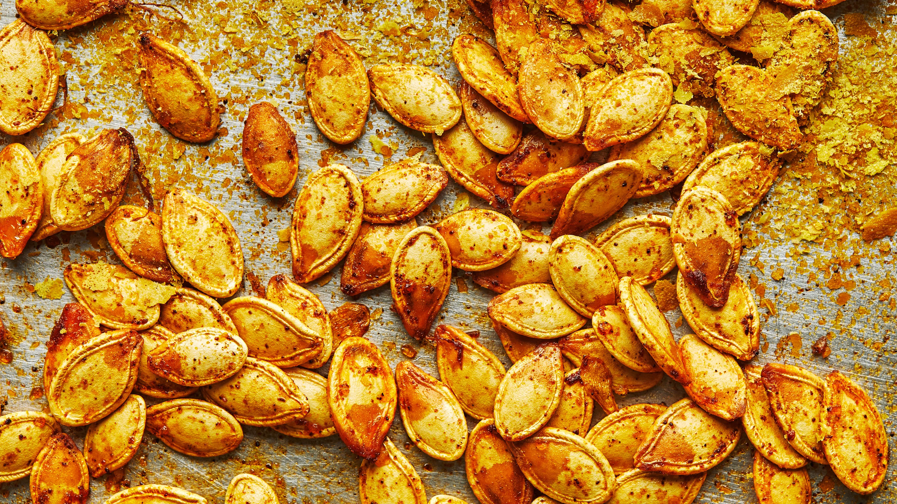

Roasted Pumpkin Seeds
Source
Ingredients
1 ½ cups raw whole pumpkin seeds
2 teaspoons butter melted
Directions
Step 1 :
Preheat oven to 300 degrees F (150 degrees C).
Step 2 :
Toss seeds in a bowl with the melted butter and salt.
Spread the seeds in a single layer on a baking sheet and bake for about 45 minutes
or until golden brown; stir occasionally.

Contact Me
Email
The University of Montana
32 Campus Dr
Missoula, MT 59812